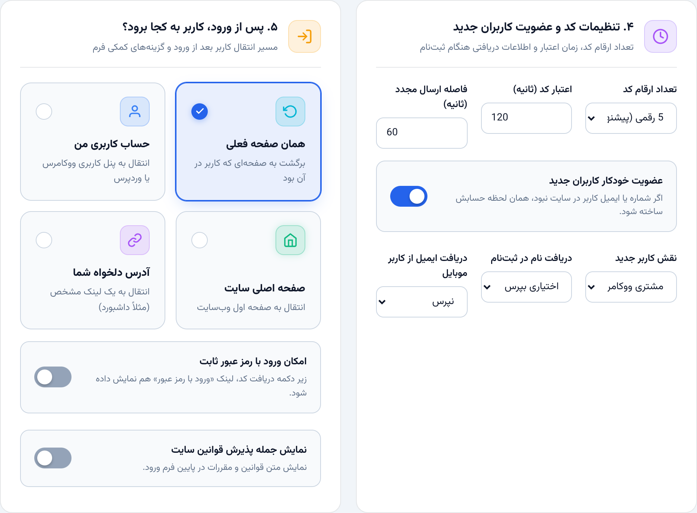
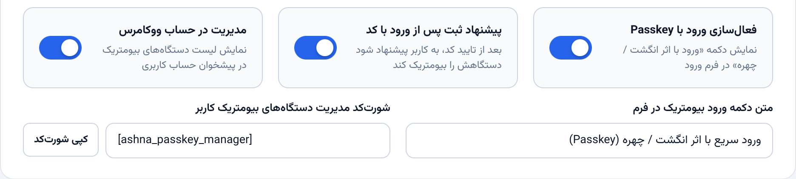
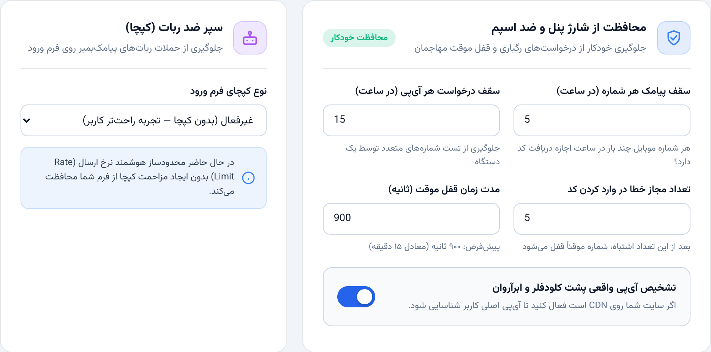
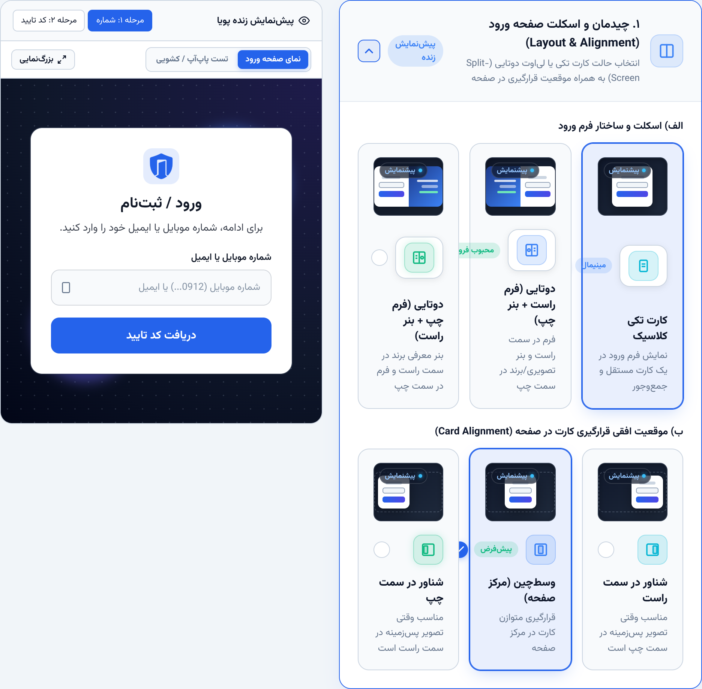

آشنا؛ ورود و ثبتنام وردپرس با کد یکبارمصرف و Passkey
پیشنیاز نسخهٔ لایسنسدار
مورد
نیازمندی
وردپرس و PHP
وردپرس حداقل ۵.۸ و PHP حداقل ۸.۲؛ پیش از تغییر PHP از هاست پشتیبان بگیرید.
لایسنس
فایل معتبر صادرشدهٔ راستچین، مدیریت هوشمند راستچین و ionCube سازگار با فایل و PHP وب.
ارسال و Passkey
حساب سرویسدهنده، اعتبار و دسترسی خروجی هاست؛ برای Passkey، HTTPS و دستگاه/مرورگر سازگار.
مراحل نصب
۱از فایلها و پایگاه دادهٔ سایت نسخهٔ پشتیبان تهیه کنید؛ ابتدا روی staging نصب کنید.
۲بستهٔ محصول را استخراج و فایل Plugin/ashna-otp.zip را بردارید؛ ZIP بیرونی را در وردپرس نصب نکنید.
۳در پیشخوان به «افزونهها / افزودن افزونه / بارگذاری افزونه» بروید. ZIP افزونه را انتخاب و «نصب هماکنون» را بزنید.
۴افزونه را فعال کنید. لایسنس را طبق راهنمای راستچین برای دامنهٔ مجاز ثبت/همگامسازی کنید.
۵پس از فعالشدن معتبر لایسنس، منوی آشنا و صفحهٔ تنظیمات را باز کنید. اگر خطا دارید، به صفحهٔ آخر این راهنما مراجعه کنید.
بستهٔ فعلی آمادهسازی، فایل واقعی لایسنس را ندارد و بدون آن امکانات نسخهٔ لایسنسدار فعال نمیشوند. مالک محصول باید پیش از توزیع، فایل معتبر را کنار ashna.php قرار دهد و بسته را مجدداً بسازد. راهنما جایگزین تأیید لایسنس نیست.
راهنما ابتدا نصب را توضیح میدهد؛ سپس پنج تصویر باکیفیت از قالبهای واقعی تنظیمات، مراحل راهاندازی را نشان میدهند. تصاویر با دادههای آزمایشی رندر شدهاند؛ آزمون نصب زندهٔ مشتری انجام نشده است.
راهاندازی مسیر ارسال · نسخهٔ ۲.۷.۹
۰۲ / درگاه و مسیر پشتیبان
اتصال سرویس ارسال کد
۱از پنل سرویسدهنده، کلید API و شناسهٔ الگوی معتبر را دریافت کنید؛ اطلاعات محرمانه را منتشر نکنید.
۲در تنظیمات «پیامک»، سرویس اصلی را انتخاب و فیلدهای همان سرویس را تکمیل کنید. سرویسهای قابل انتخاب شامل SMS.ir، کاوهنگار، ملیپیامک، فراز و آیپیپنلاند.
۳در صورت نیاز، حداکثر سه درگاه پشتیبان را به ترتیب اولویت مشخص کنید. هر سرویس باید حساب و تنظیمات معتبر خودش را داشته باشد.
۴زمان انتظار هر تلاش و کل مسیر را تنظیم و ذخیره کنید؛ سپس با ابزار ارسال آزمایشی و شمارهٔ مجاز خودتان، پاسخ واقعی سرویس را بررسی کنید.
انتخاب سرویس اصلی و تنظیم زمان انتظار — رندر آفلاین قالب واقعی با مقادیر پیشفرض؛ نه نصب زندهٔ وردپرس.
پیشفرض هر تلاش ۴ ثانیه و کل مسیر پیامک/بله ۹ ثانیه است. تلاشها ترتیبیاند؛ بودجهٔ API زمان قطعی تحویل پیامک نیست. نتیجهٔ مبهم و ارسال تکراری ممکن است. هزینهٔ پنل مستقل از افزونه است.
ایمیل و بله
برای استفاده از این روشها، اطلاعات اتصال را در «بله و ایمیل» تکمیل کنید. ارسال ایمیل به تنظیم درست سرویس ایمیل هاست وابسته است. قبل از انتشار، دریافت واقعی هر مسیر انتخابشده را آزمایش کنید.
کد تأیید و ثبتنام · نسخهٔ ۲.۷.۹
۰۳ / احراز هویت
رفتار ورود را مشخص کنید
۱تب «احراز هویت» را باز کنید و روش ورود با موبایل، ایمیل یا هر دو را متناسب با مسیر ارسال انتخاب کنید.
۲طول و اعتبار کد و فاصلهٔ ارسال مجدد را بررسی کنید؛ پیشفرض اعتبار ۱۲۰ ثانیه و فاصلهٔ ارسال مجدد ۶۰ ثانیه است.
۳برای ثبتنام عمومی، دریافت نام/ایمیل و پذیرش قوانین را متناسب با سیاست سایت تنظیم کنید. نقش ویژه یا فروشنده را از ثبتنام عمومی اعطا نکنید.
۴مقصد بعد از ورود را تعیین کنید، تنظیمات را ذخیره و ورود حساب موجود و ثبتنام مجاز را جداگانه آزمایش کنید.

تنظیم کد، ثبتنام عمومی و مقصد پس از ورود — رندر آفلاین قالب واقعی با مقادیر پیشفرض؛ نه نصب زندهٔ وردپرس.
با فعالکردن اتصالهای عضویت/دکان، ثبتنام عمومی آشنا مسدود میشود؛ ثبتنام تخصصی، پرداخت و تأیید در افزونهٔ اصلی باقی میماند. ورود موفق از نشست استاندارد وردپرس استفاده میکند، نه JWT مستقل.
راهاندازی Passkey · نسخهٔ ۲.۷.۹
۰۴ / ورود بدون رمز
Passkey را فعال و آزمایش کنید
۱HTTPS سایت، پشتیبانی مرورگر/دستگاه و فعالبودن قابلیت موردنیاز در هاست را بررسی کنید.
۲در تنظیمات احراز هویت، گزینهٔ Passkey و محل نمایش پیشنهاد ثبت/مدیریت کلید را تنظیم و ذخیره کنید.
۳در حساب کاربر آزمایشی وارد شوید و با رابط واقعی افزونه، کلید ورود را ثبت کنید. راهنمای دستگاه ممکن است اثر انگشت، تشخیص چهره یا PIN بخواهد.
۴از حساب خارج شوید و ورود با همان کلید را بررسی کنید؛ حذف کلید و مسیر جایگزین ورود را نیز آزمایش کنید.

گزینههای Passkey و مدیریت کلید ورود — رندر آفلاین قالب واقعی با مقادیر پیشفرض؛ نه نصب زندهٔ وردپرس.
نمایش مدیریت کلید در برگه
در صورت نیاز، شورتکد زیر را در برگه یا ابزارک شورتکد قرار دهید؛ کاربر باید وارد حساب خود شده باشد.
[ashna_passkey_manager]
مورد
نکتهٔ اجرایی
ثبت کلید
قبل از اولین ورود با Passkey باید کلید در حساب واقعی ثبت شود.
دادهٔ بیومتریک
تأیید در دستگاه انجام میشود؛ آشنا تصویر چهره یا اثر انگشت را دریافت نمیکند.
تغییر دستگاه
انتقال/همگامسازی کلید تابع دستگاه و سرویس کاربر است؛ کارکرد روی همهٔ دستگاهها تضمین نشده است.
Permission
ورود حساب موجود نقش و مجوز آن را حفظ میکند؛ جایگزین سیاست عضویت یا همهٔ افزونههای امنیتی نیست.
نمونهٔ تعاملی در لندینگ، Passkey واقعی اجرا نمیکند. این مراحل باید در نصب وردپرس HTTPS واقعی آزمایش شوند.
تنظیم امنیت · نسخهٔ ۲.۷.۹
۰۵ / محدودیت درخواست و تأیید
امنیت را پیش از انتشار تنظیم کنید
۱در «امنیت و فایروال»، سقف ساعتی هر گیرنده و هر IP و فاصلهٔ ارسال مجدد را بررسی کنید.
۲حداکثر تلاش تأیید و مدت قفل موقت را تنظیم کنید. در حساب آزمایشی، کد نادرست را وارد و اعمال قفل را بررسی کنید.
۳در صورت نیاز، کپچا را انتخاب و کلیدهای معتبرش را وارد کنید؛ صرف انتخاب نوع کپچا بدون تنظیم صحیح کلیدها کافی نیست.
۴لیست سیاه/سفید را محدود و هدفمند نگه دارید؛ سپس ذخیره و ارسالهای تکراری را آزمایش کنید.

کنترل درخواست، قفل موقت و کپچا — رندر آفلاین قالب واقعی با مقادیر پیشفرض؛ نه نصب زندهٔ وردپرس.
پیشفرض
مقدار
هر شماره/ایمیل و هر IP
۵ و ۱۵ درخواست در ساعت گذشته
تأیید ناموفق
۵ تلاش؛ قفل موقت ۱۵ دقیقه
ارسال مجدد
۶۰ ثانیه؛ لیست سفید استثنا دارد
این کنترلها limiter مستقل «هر IP در دقیقه» یا رزرو اتمیک سهمیه نیستند. در بار همزمان و failover، جلوگیری قطعی از مصرف اعتبار تضمین نمیشود. برای سایت حساس، WAF/Rate Limiting و سقف مصرف/هشدار پنل پیامکی نیز لازم است.
ظاهر فرم · نسخهٔ ۲.۷.۹
۰۶ / شخصیسازی
فرم را همرنگ سایت کنید
۱در تب «ظاهر»، قالب، رنگ، فونت، ابعاد و گوشههای فرم را انتخاب کنید.
۲لوگوی دلخواه و در صورت نیاز CSS سفارشی را اضافه کنید؛ استعداد همراه افزونه است، فونت تجاری نیازمند مجوز جداگانه است.
۳نتیجه را در پیشنمایش بررسی، ذخیره و فرم واقعی را در موبایل/دسکتاپ باز کنید.

تنظیم ظاهر همراه پیشنمایش فرم — رندر آفلاین قالب واقعی با مقادیر پیشفرض؛ نه نصب زندهٔ وردپرس.
حالت نمایش در صفحه، پاپآپ، کشوی کناری یا شیت پایین را متناسب با مسیر کاربر انتخاب کنید. پیشنمایش پنل بهتنهایی جای تست فرم واقعی با قالب سایت را نمیگیرد.
نمایش فرم و اتصالها · نسخهٔ ۲.۷.۹
۰۷ / انتشار فرم
فرم را در مسیر کاربر قرار دهید
برگهٔ ورود با شورتکد
۱یک برگه در وردپرس بسازید و بلوک «کد کوتاه» یا ابزارک شورتکد المنتور را در آن قرار دهید.
۲شورتکد زیر را وارد، برگه را منتشر و در مرورگر مهمان باز کنید.
۳برای فرم یا دکمهٔ ورود المنتور میتوانید از ویجتهای آشنا استفاده کنید؛ مقصد پس از ورود را روی سایت واقعی بررسی کنید.
[ashna_otp_login]
ووکامرس
از تنظیمات ووکامرس آشنا، نمایش ورود در حساب کاربری و تسویهحساب را تنظیم کنید. با مشتری آزمایشی، سبد مهمان، ورود، ادامهٔ تسویهحساب، سفارشهای همان مشتری و خروج را بررسی کنید. انتقال نشست مهمان از API عمومی ووکامرس، در صورت فعالبودن نشست انجام میشود.
اتصالهای اختیاری حساب موجود
افزونه
محدودهٔ اتصال
Dokan
تشخیص فروشندهٔ موجود و مقصد داشبورد/حساب؛ ایجاد فروشنده یا تأیید مدیر با دکان است.
Paid Memberships Pro
ورود حساب موجود و مقصد حساب/انتخاب پلن؛ پرداخت و محدودیت محتوا با PMPro است.
Ultimate Member
ورود حساب موجود با بررسی وضعیت حساب؛ گردشکارها و افزودنیهای تخصصی کامل پوشش داده نمیشوند.
MemberPress
فقط پل آزمایشی؛ سازگاری واقعی تأیید نشده و بهعنوان قابلیت تأییدشده عرضه نمیشود.
اتصالها پیشفرض خاموشاند. فقط برای افزونهای که در سایت نصب است فعال کنید. تست اتصالها API/fixture است؛ آزمون کامل قالب، پرداخت، افزونههای جانبی و permissionها روی staging خودتان لازم است.
آزمون نهایی راهاندازی
ارسال واقعی پیامک/ایمیل/بله، کد غلط و منقضی، نقش حساب موجود، مقصد بازگشت، ورود مجدد، سبد خرید و خروج را بررسی کنید. قبل از انتشار، حالت Sandbox را مطابق نیاز سایت بررسی کنید؛ ارسال آزمایشی مدیریتی جای محدودیت امنیتی کاربر عمومی نیست.
بهروزرسانی و عیبیابی · نسخهٔ ۲.۷.۹
۰۸ / نگهداری
بهروزرسانی بدون حذف دادهها
۱از فایلها، دیتابیس، تنظیمات و فایل معتبر لایسنس پشتیبان بگیرید.
۲آخرین ZIP کامل افزونه را دریافت کنید؛ فایل بروزرسان همان بستهٔ نصب کامل است، نه ZIP بیرونی محصول.
۳از «افزونهها / افزودن / بارگذاری»، ZIP را بارگذاری و «جایگزینی نسخهٔ فعلی» را انتخاب کنید. ابتدا افزونه را حذف نکنید.
۴اگر پوشهٔ نسخهٔ قدیمی نام متفاوتی دارد، آن نسخه را غیرفعال و پوشهٔ کامل جدید را نصب کنید؛ فایلها را مخلوط و دو نسخه را همزمان فعال نکنید.
۵کش را پاک و ارسال، ورود مجدد، نقشها، Passkey و خرید را بررسی کنید.
اگر افزونه فعال نمیشود
نشانه
بررسی
خطای PHP/Loader
نسخهٔ PHP وب، ionCube فعال و سازگاری دقیق فایل لایسنس با Loader را از هاست بپرسید؛ PHP CLI ممکن است متفاوت باشد.
لایسنس غیرفعال
وجود فایل معتبر کنار ashna.php، دامنهٔ مجاز و وضعیت مدیریت لایسنس راستچین را بررسی کنید؛ فایل را دستکاری نکنید.
پیامک دریافت نمیشود
اعتبار پنل، کلیدها/الگو، دسترسی خروجی هاست، پاسخ درگاه و گزارش ارسال را بررسی کنید.
ورود/انتقال نادرست
HTTPS/کوکی، مقصد بازگشت، کش فرم، وضعیت حساب و تعارض افزونهها را در staging بررسی کنید.
پشتیبان و حذف
از «ابزارها و پشتیبان» نسخهٔ پشتیبان تنظیمات تهیه کنید. گزینهٔ «حذف دادهها هنگام حذف افزونه» را فقط آگاهانه فعال کنید؛ حذف افزونه با این گزینه میتواند دادههای آن را پاک کند. برای آپدیت از حذف استفاده نکنید.
در درخواست پشتیبانی، نسخهٔ افزونه، وردپرس، PHP، شرح مراحل و پیام خطای بازبینیشده را ارسال کنید؛ API key، رمز، شماره کاربران، nonce یا فایل لایسنس را عمومی منتشر نکنید.
این راهنما برای نسخهٔ لایسنسدار است. نسخهٔ بدون لایسنس موجود در بستهٔ تحویل فقط جهت آزمایش جداگانه است؛ برای ارسال رسمی از آن استفاده نکنید. قبل از پذیرش رسمی بازار، شرایط پشتیبانی را از صفحهٔ تأییدشدهٔ محصول بررسی کنید.